SD and SDIO
Table of Contents
- 1. The Introduction of SDIO
- 2. SDIO Signaling Definition
- 3. SD Bus Protocol
- 4. SDIO Card Initializatio
- 5. Differences with SD Memory Specification
- 6. SDIO Card Internal Operation
1 The Introduction of SDIO
The SD standard offers great flexibility, include the ability to use the SD slot for more than memory cards. SDIO card is an interface that extends the functionality of devices by using a standard SD card slot to give devices new capabilities. A partial list of new capabilities incudes:
- GPS
- Camera
- Wi-Fi
- Ethernet
- Barcode readers
- Bluetooth
The SDIO (SD Input/Outpu) card is based on and compatible with the SD memory card. This compatibility incudes mechanical, electrical, power, signaling and software. The intent of the SDIO card is to provide high-speed data I/O with low power consumption for mobile electronic deivices.
1.1 SDIO Features
- Targeted for partable and stationary applications
- Minimal or no modification to SD Physical bus is required
- Minimal change to memory driver software
- Extended physical form faactor available for specialized applications
- Plug and play (PnP) support
- Multi-function support including multiple I/O and combined I/O and memory
- Up to 7 I/O functions plus one memory supported on one card.
- Allows card to interrupt host.
- Operational Voltage range: 2.7-3.6V
- Application Specifications for Standard SDIO Functions.
- Multiple Form Factos:
- Full-Size SDIO
- miniSDIO
2 SDIO Signaling Definition
2.1 SDIO Card Types
- Full-Speed card:
- supports SPI, 1-bit SD and the 4-bit SD transfer modes at the full clock range of 0-25MHz.
- Over 100Mb/second (10MB/Sec)
- Low-Speed SDIO card:
- Requires only the SPI and 1-bit SD transfer modes. 4-bit support is optional.
- Support a full clock range of 0-400 KHz
2.2 SDIO Card modes
2.2.1 SPI (Card mandatory support)
In this mode pin 8, which is undefined for memory, is used as the interrupt pin.
2.2.2 1-bit SD Data Transfer Mode (Card Mandatory Support)
In this mode, data is transfered on the DAT[ 0] pin only.
2.2.3 4-bit SD Data Transfer Mode (Mandatory for Hight-Speed Cards, Optional for Low-Speed)
In this mode, data is transferred on all 4 data pins (DAT[3:0]). The 4-bit SD mode provides the hightest data transfer possible, up to 100Mb/sec.
2.3 Signal Pins
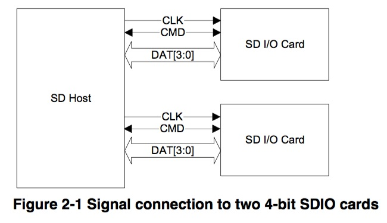
3 SD Bus Protocol
3.0.1 SD Bus
Communication over the SD bus is based on command and data bit streams that are initiated by a start bit and terminated by a stop bit.
- Command : a command is a token that starts an operation. A command is sent from the host either to a single card (addressed command) or to all connected cards (broadcast command). A command is transferred serially on the CMD line.
- Response : a response is a token that is sent from an adressed card, or (synchronously) from all connected cards, to the hosts as an answer to a previously received command. A response is transferred serially on the CMD line.
- Data : data can be transferred from the card to the host ro vice versa. Data is transfrerred via the data lines.
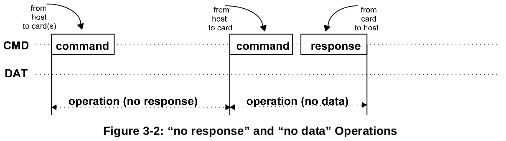
Card addressing is implemented using as session address, assigned to the card druing the initialization phase.
Data transfer to/from the SD Memory Card are done in blocks. Data blocks are always succeeded by CRC bits. Single and multiple block operations are defined. Note that the Multiple
Block operation mode is better for faster write operation. A multiple block transmission is terminated when a stop command follows on the CMD line. Data transfer can be configured by the host to use single or multiple data lines.
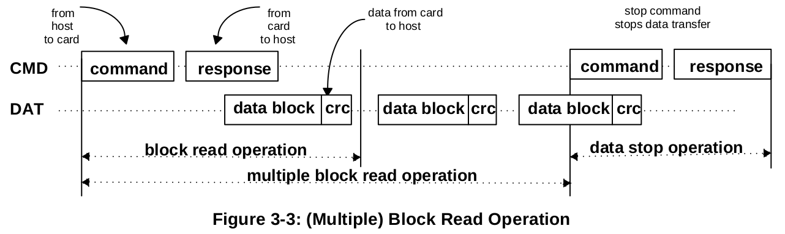
The block write operation uses a simple busy signaling of the write operation duration on the DAT0 data line regardless of the number of data lines used for transferring the data.
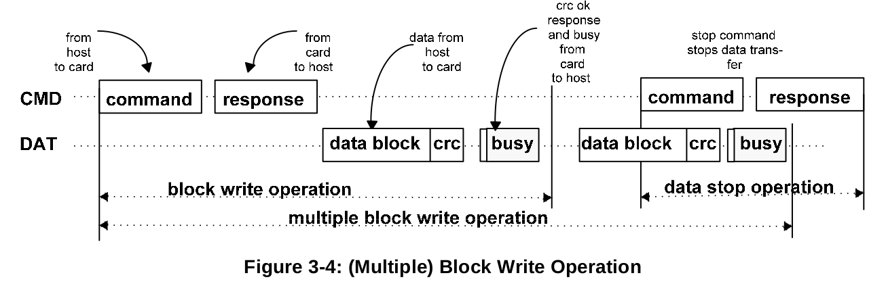
Command tokens have the following coding scheme:
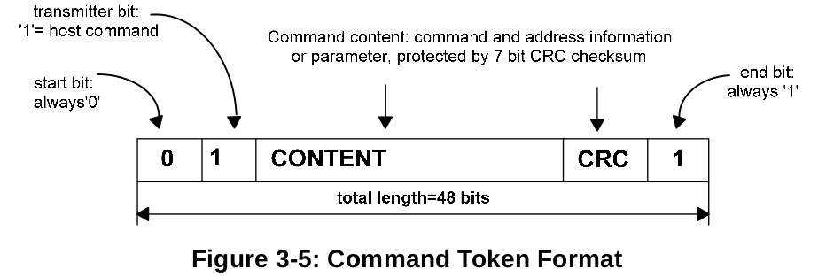
Each command token is precedes by a start bit (0) and succeeded by and end bit (1). The total length is 48 bits. Each token is protected by CRC bits so that transmission errors can be detected and the operation may be repeated.
Resopnse tokens have one of four coding schemes, depending on their content. The token length is either 48 or 136 bits. The CRC protection algorithm for block data is a 16-bit CCITT polynomial.
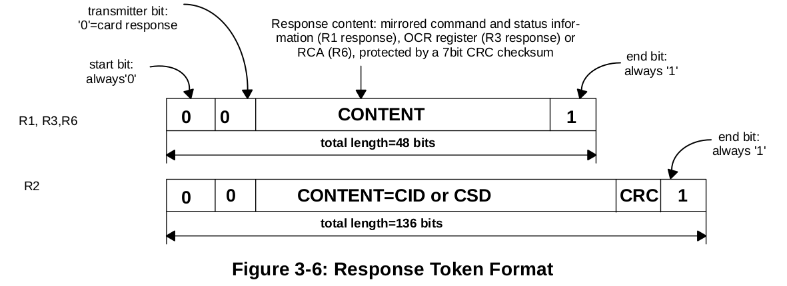
In the CMD line the Most Significant Bit (MSB) is transmitted first, the Least Significant Bit (LSB) is the last. When the wide bus option is used, the data is transferred 4 bits at a time. Start and end bits, as well as the CRC bits, are transmitted for every one of the DAT lines. CRC bits are calculated and checked for every DAT line individually. The CRC status response and Busy indication will be sent by the card to the host on DAT0 only.
There are two types of Data packet format for the SD card. (1) Usual data (8-bit width): The usual data (8-bt width) are sent in LSB (Least Significant Byte) first, MSB (Most Significant Byte) last sequence. But in the individual byte, it is MSB (Most Significant Bit) first, LSB (Least Significant Bit) last. (2) Wide width data (SD Memory Register): The wide width data is shifted from the MSB bit.
- Data Packet Format for Usual Data(8-bit width)
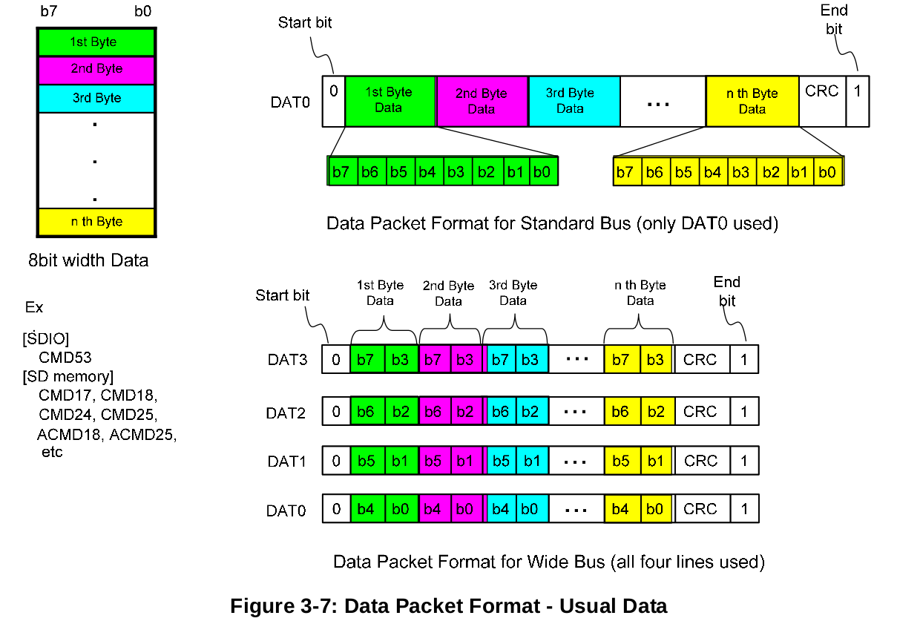
- Data Packet Format for Wide Width Data (Ex. ACMD13)
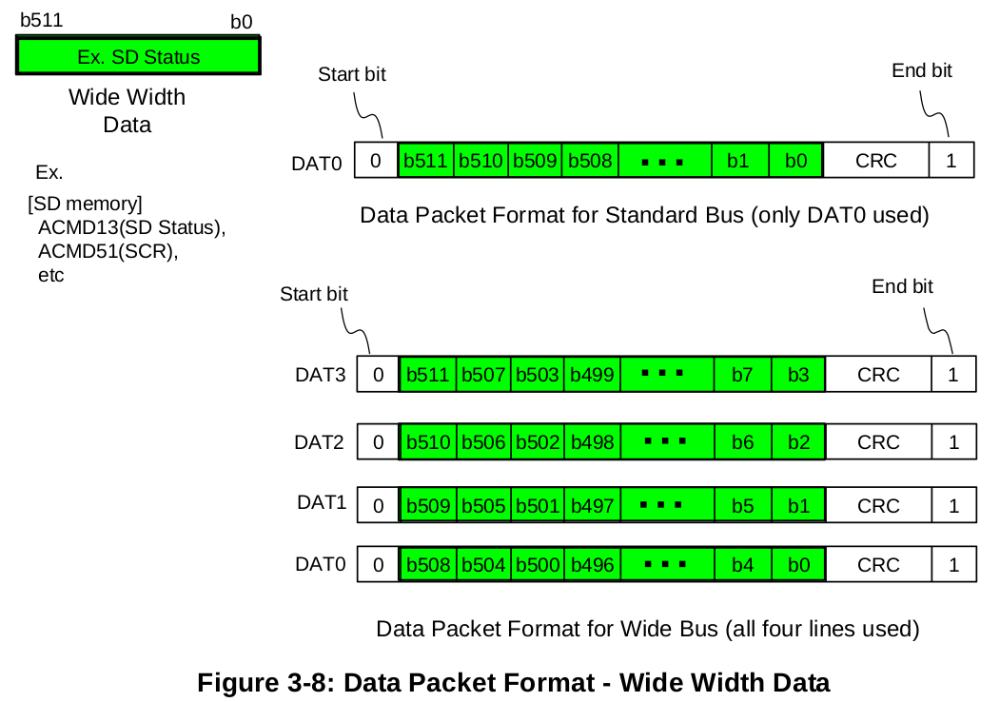
3.1 SD Memory Card Functional Description
All communication between host and cards is controlled by the host (master). The host send commands of two types: broadcast and addressed(point-to-point) commands.
- Broadcast commands
Broadcast commands are intended for all cards. Some of these commands require a response.
- Addressed(point-to-point) commands
The addressed commands are sent to the addressed card and cause a response from this card.
- Card identification mode
The host will be in card identification mode after reset and while it is looking for new cards on the bus. Cards will be in this mode after reset until the SENDRCA command (CMD3) is received.
- Data transfer mode
Cards will enter data transfer mode after their RCA is first published. The host will enter data transfer mode after identifying all the cards on the bus.
The following table shows the dependencies between operation modes and card states.
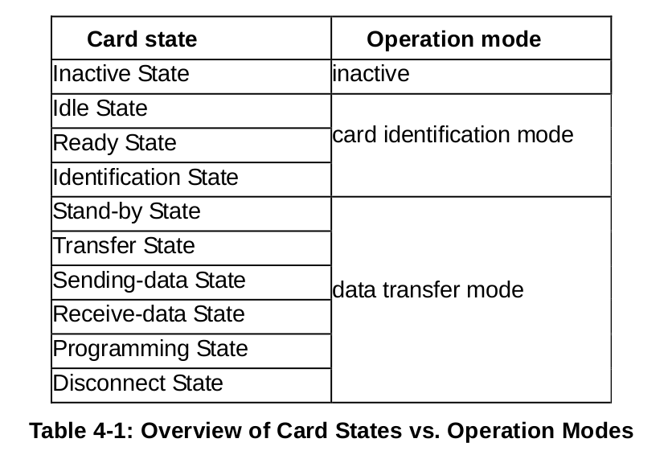
3.2 Card Identification Mode
While in card identification mode the host resets all the cards that are in card identification mode, validates operation voltage range, identifies cards and asks them to publish Relative Card Address(RCA). This operation is done to each ard separately on its own CMD line. All data communication in the Card Identification Mode uses the command line (CMD) only. During the card identification process, the card shall operate in the SD clock frequency of the identificaiton clock rate.
3.2.1 Card Reset
The command GOIDLESTATE(CMD0) is the software reset command and sets each card into Idle State regardless of the current card state.
3.2.2 Operating Condition Validation
The host issues a reset command (CMD0) with a specified voltage while assuming it may be supported by the card. To verify the voltage, a following new command (CMD8) is defined in the Physical Layer Specification Version 2.00.
SENDIFCOND (CMD8) is used to verify SD Memory Card interface operating condition. The card checks the validity of operating condition by analyzing the argument of
CMD8 and the host checks the validity by analyzing the reponse of CMD8. The supplied voltage is indicated by VHS filed in the argument. The card assumes the voltage specified in VHS as the current supplied voltage. Only 1-bit of VHS shall be set to 1 at any given time.
Both CRC and check pattern are used for the host to check validity of communication between the host and the card. If the card cannot operate on the supplied voltage, it returns no response and stays in idle state. It is mandatory to issue CMD8 prior to first ACMD41 for initialization of High Capacity SD Memory Card.
SDSENDOPCOND (ACMD41) is designed to provide SD Memory Card hosts with a mechanism to identify and reject cards which do not match the VDD range desired by the host. Cards which cannot perform data transfer in the specified range shall discard themselves from further bus operations and go into Inactive StTATE. Note that ACMD41 is application specific command, therefore APPCMD (CMD55) shall always precede ACMD41.
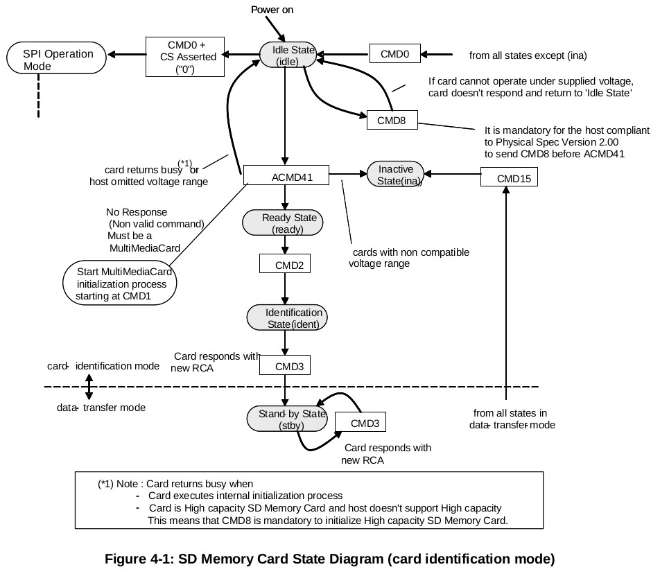
3.3 Card Initialization and Identification
The initialization process starts with SDSENDOPCOND (ACMD41) by setting its operational conditions and the HCS bit in the OCR. The HCS (Host Capacity Support) bit set to 1 indicates that the host supports High Capacity SD Memeory card. The HCS (Host Capacity Support) bit set to 0 indicates that the host does not support Hight Capacity SD Memory card.
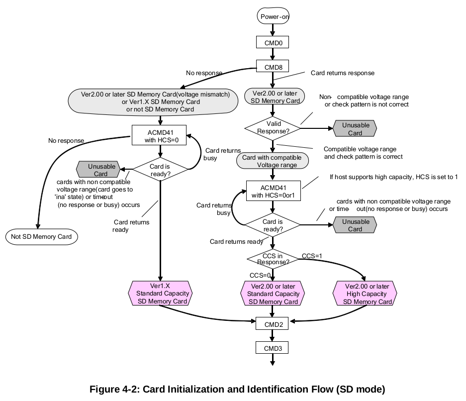
3.4 Data Transfer Mode
Until the end of Card Identificaton Mode the host shall remain at fOD freequency because some cards may have operating frequency restrictions during the card identification mode. In Data Transfer Mode the host may operate the card in fPP frequency range. The host issues SENDCSD(CMD9) to obtain the Card Specific Data(CSD register), e.g. block length, card storage capacity, etc. The broadcast command SETDSR (CMD4) configures the driver stages of all identified cards. It programs their DSR registers corresponding to the application bus layout and the number of cards on the bus and the data transfer frequency. The clock rate is also switched from fOD to fPP at that point. SETDSR command is an option for the card and the host.
CMD7 is used to select one card and put it into the Transfer State. Only one card can be in the Transfer State at a given time. If a previously selected card is in the Transfer State its connection with the host is released and it will move back to the Stand-by State. When CMD7 is issued with the reserved relative card address "0x0000", all cards are put back to Stand-by State.
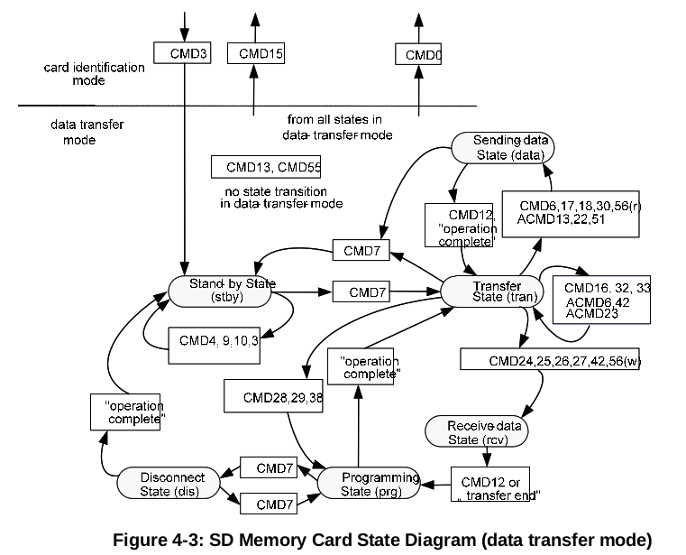
The relationship between the various data transfer modes is summarized below.
- All data read commands can be aborted any time by the stop command (CMD12). The data transfer
will terminate and the card will return to the Transfer State. The read command are: block read (CMD17), multiple block read (CMD18), send write protect (CMD30), send scr (ACMD51) and general command in read mode (CMD56).
- All data write commands can be aborted any time by the stop command (CMD12). The write commands shall be stopped prior to deselecting the card by CMD7. The write commands are: block write (CMD24 and CMD25), program CSD (CMD27), lock/unlock command (CMD42) and general command in write mode (CMD56).
- As soon as the data transfer is completed, the card will exit the data write state and move either to the Programming State (transfer is successful) or Transfer State (transfer failed).
- If a block write operation is stopped and the block length and CRC of the last block are valid, the data will be programmmed.
- The card may provide buffering for block write. This means that the next block can be sent to the card while the previous is being programmed.
If all write buffers are full, and as long as the card is in Programming State, the DAT0 line will be kept low (BUSY).
- There is no buffering option for write CSD, write protection and erase. This means that while the card is busy servicing any one of these commands, no other data transfer commands will be accepted.
DAT0 line will be kept low as long as the card is busy and in the Programming State. Actually if the CMD and DAT0 lines of the cards are kept separated and the host keep the busy DAT0 line disconnected from the other DAT0 lines(of the other cards) the host may access the other cards while the card is in busy.
- Parameter set commands are not allowed while card is programming.
Parmeter set commands are: set block length (CMD16), erase block start (CMD32) and erase block end (CMD33).
- Read commands are not allowed while card is programming.
- Moving another card from Stand-by to Transfer State (using CMD7) will not terminate erase and
programming operations. The card will switch to the Disconnect State and will release the DAT line.
- A card can be reslected while in the Disconnect State, using CMD7. In this case the card will move to the Programming State and reactivate the busy indication.
- Resetting a card (using CMD0 or CMD15) will terminate any pending or active programming operation. This may destroy the data contents on the card. It is the host's
responsibility to prevent this.
- CMD34-37, CMD50 and CMD57 are reserved for SD command system expansion. State transitions for these commands are defined in each command system specification.
3.5 Commands
3.5.1 Command Format
All commands have a fixed code length of 48 bits, needing a transmission time of 1.92 us @ 25 MHz and 0.96 us @ 50 MHz.
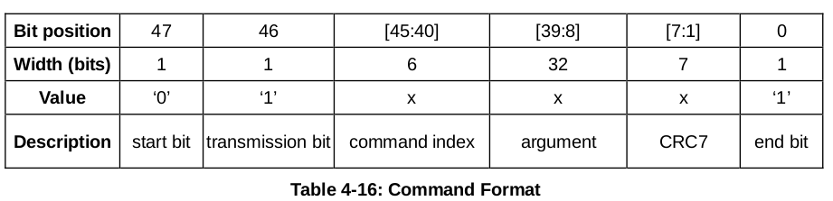
3.5.2 Detailed Command Description
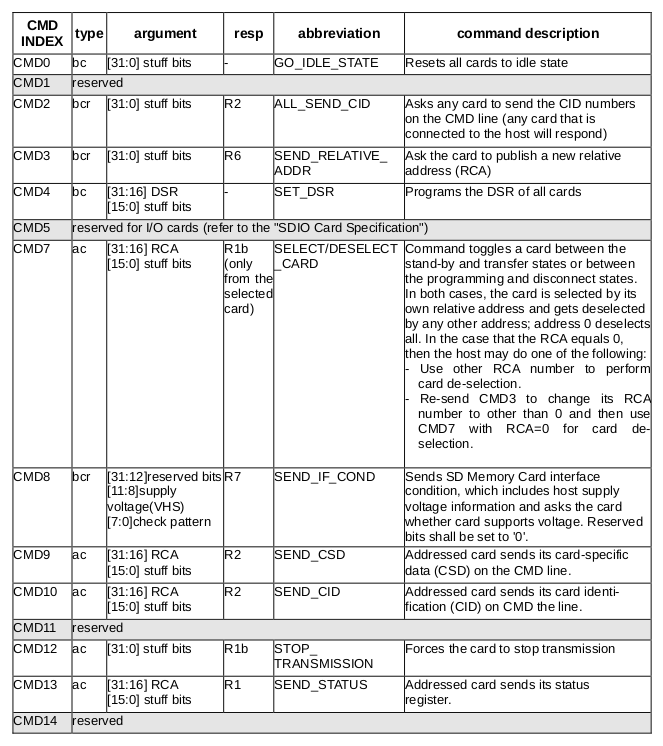
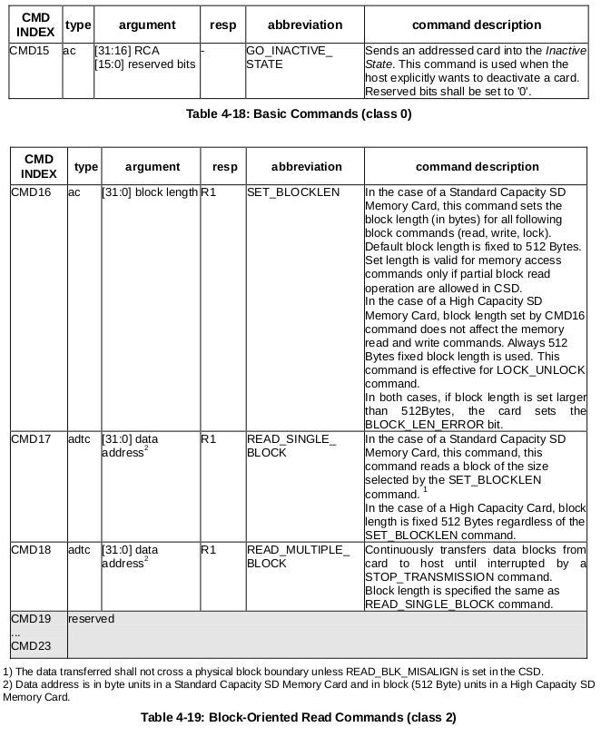
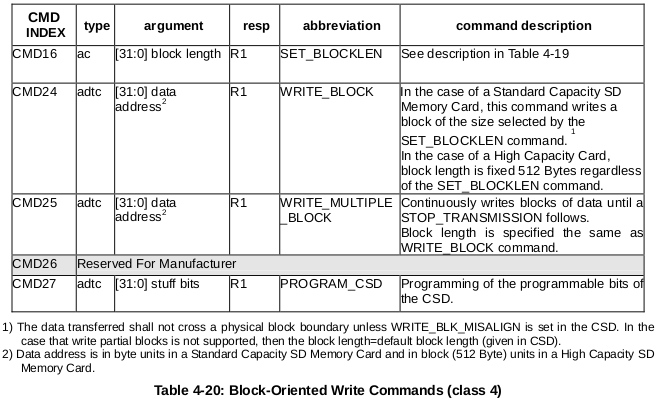
3.6 Responses
All responses are sent via the command line CMD. The response transmission always starts with the left bit of the bit string corresponding to the response codeword. The code length depends on the response type.
There are five types of responses for the SD Memory Card. The SDIO Card supports additional response types named R4 and R5.
3.6.1 R1 (normal response command):
Code length is 48 bits. The bits 45:40 indicate the index of the command to be responded to, this value being interpreted as a binary coded number (between 0 and 63). The status of the card is coded in 32 bits.
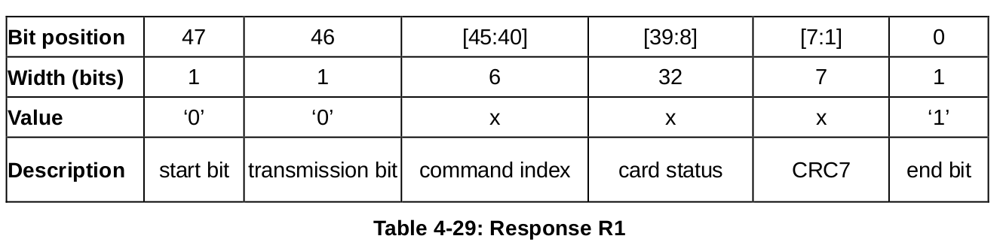
3.6.2 R1b
R1b is identical to R1 with an optional busy signal transmitted on the data line. The card may become busy after receiving these commands based on its state prior to the command reception. The Host shall check for busy at the response.
3.6.3 R2 (CID, CSD register)
Code length is 136 bits. The contents of the CID register are sent as a response to the commands CMD2 and CMD10. The contents of the CSD register are sent as a response to CMD9. Only the bits [127…1] of the CID and CSD are transferred, the reserved bit 1 of these regisers is replaced by the end bit of the response.
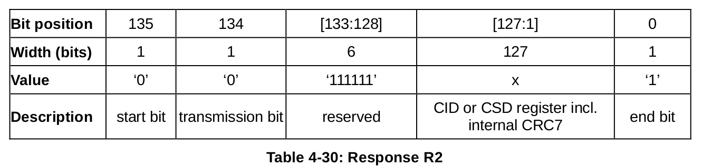
3.6.4 R3 (OCR register)
Code length is 48 bits. The contents of the OCR register are sent as a response to ACMD41.
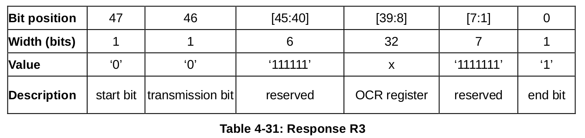
3.6.5 R6 (Published RCA response)
Code length is 48 bit. The bits 45:40 indicate the index of the Command to be responded to - in that case, it will be '000011'(together with bit 5 in the status bits it means = CMD3). The 16 MSB bits of the argument field are used for the Published RCA number.
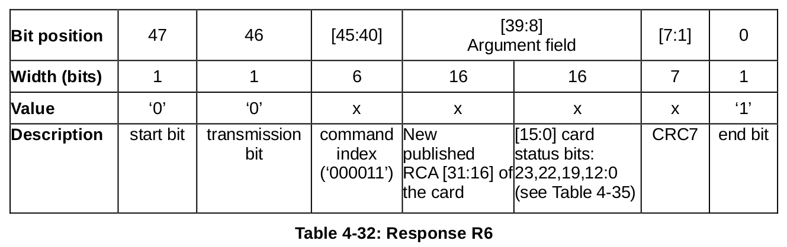
3.7 R7 (Card interface condition)
Code length is 48 bits. The card support voltage information is sent by the response of CMD8. Bits 19-16 indicate the voltage range that the card supports. The card that accepted the supplied voltage returns R7 response. In the response, the card echoes back both the voltage range and check pattern set in the argument.
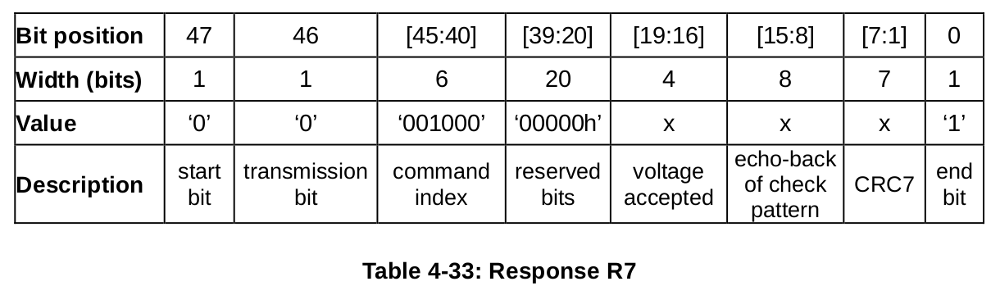
4 SDIO Card Initializatio
After reset or power-up, all I/O functions on the card are disabled and the I/O portion of the card shall not execute any operation except CMD5 or CMD0 with CS=low. If there is SD memory installed on the card, that memory shall respond normally to all normal mandatory memory commands.
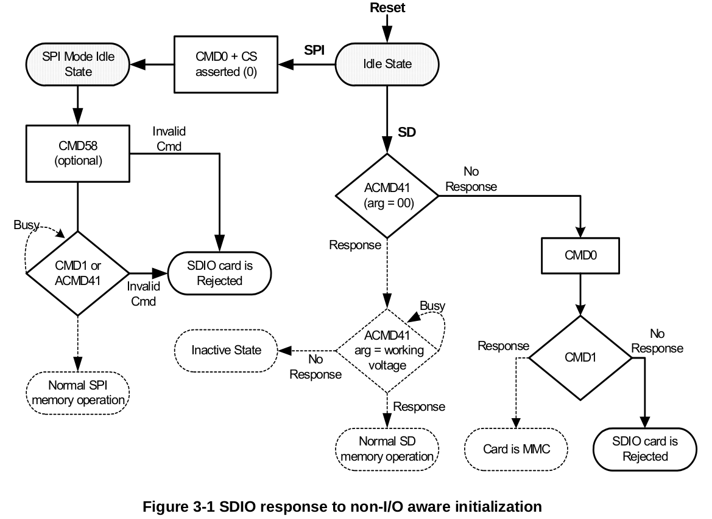
An SDIO aware host shall send CMD5 arg=0 as part of the initialization sequence after either Power On or a CMD52 with write to I/O Reset. Sending CMD5 arg=0 that has not been preceded by one of these two reset conditions shall not result int either the host or card entering the initialization sequence.
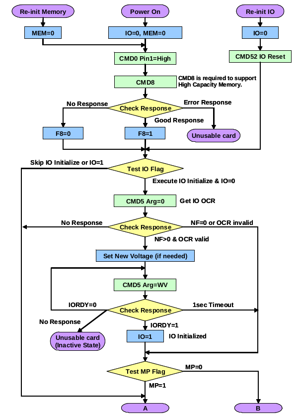
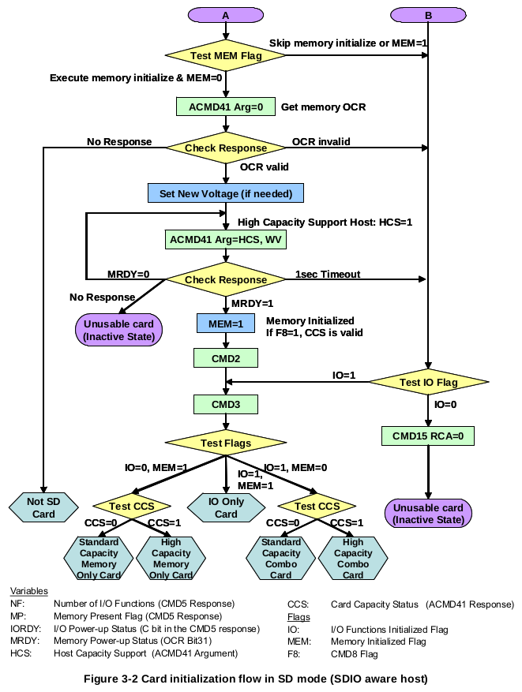
4.1 The IOSENDOPCOND Command (CMD5)
Figure 3-4 shows the format of the IOSENDOPCOND command (CMD5). The function of CMD5 for SDIO cards is similar to the operation of ACMD41 for SD memory cards. It is used to inquire about the voltage range needed by the I/O card. The normal response to CMD5 is R4 in either SD or SPI format. The R4 response in SD mode is shown in Figure 3-5 and the SPI version is shown in Figure 3-6.
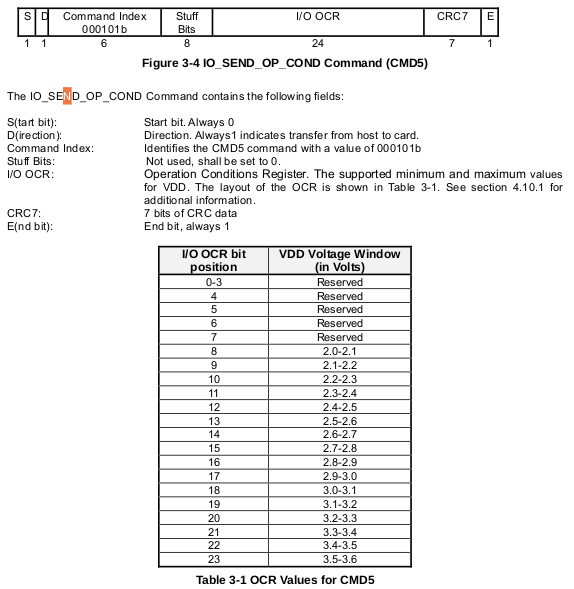
4.2 The IOSNEDOPCOND Response (R4)
An SDIO card receiving CMD5 shall respond with a SDIO unique response, R4. the format of R4 for both the SD and SPI modes is:
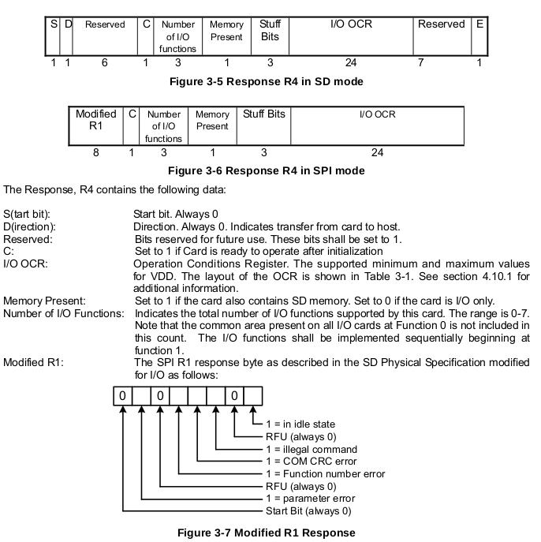
5 Differences with SD Memory Specification
5.1 Unsupported SD Memory Commands
Several commands required for SD Memory cards are not supported by either SDIO-only cards or the I/O partion of Combo cards. Some of these commands have no use in SDIO cards such as Erase commands and thus are not supported in SDIO. In addition, there are several commands ofr SD memory cards that have different commands when used with the SDIO section of a card.
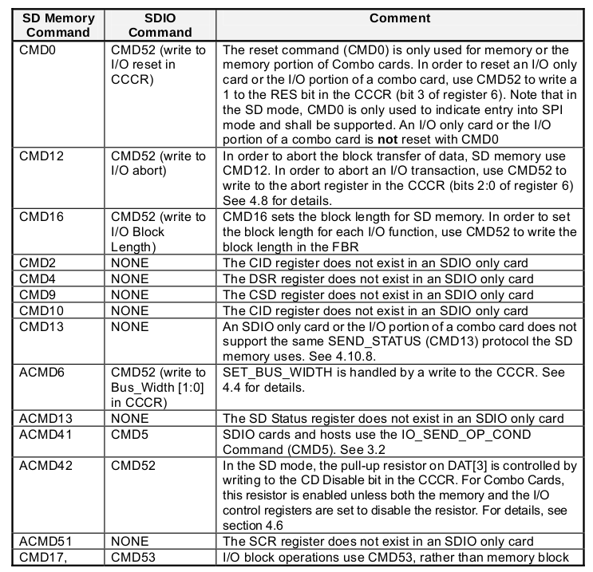 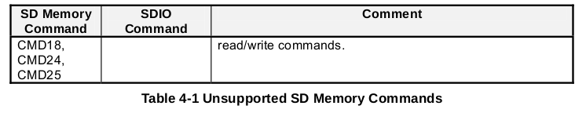
5.2 Modified R6 Response
The normal response to CMD3 by a memory card is R6.
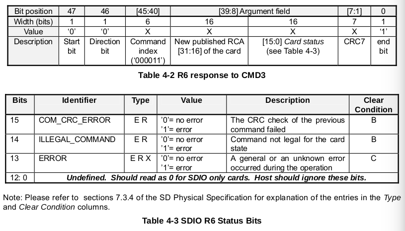
5.3 New I/O Read/Write Commands
5.3.1 IORWDIRECT command (CMD52)
The IORWDIRECT is the simplest means to access a single register within the total 128K of register space in any I/O function, including the common I/O area (CIA). This command reads or wirtes 1 byte using only 1 command/response pair. A common use is to initialize registers or monitor status values for I/O functions. This command is the fastest means to read or write single I/O registers, as it requires only a sigle command/response pari.
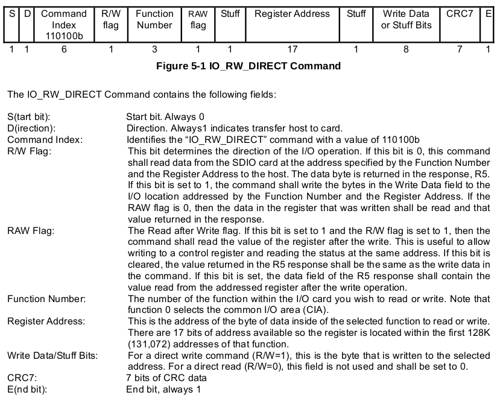
5.3.2 IORWDIRECT Response (R5)
The SDIO card's response to CMD52 shall be in one of two formats. If the communication between the card and host is in the 1-bit or 4-bit SD mode.
5.3.3 IORWEXTENDED Command (CMD53)
In order to read and write multiple I/O registers with a single command, a new command, IORWEXTENDED is defined. This command allows the reading or writing of a large number of I/O registers with a single command.
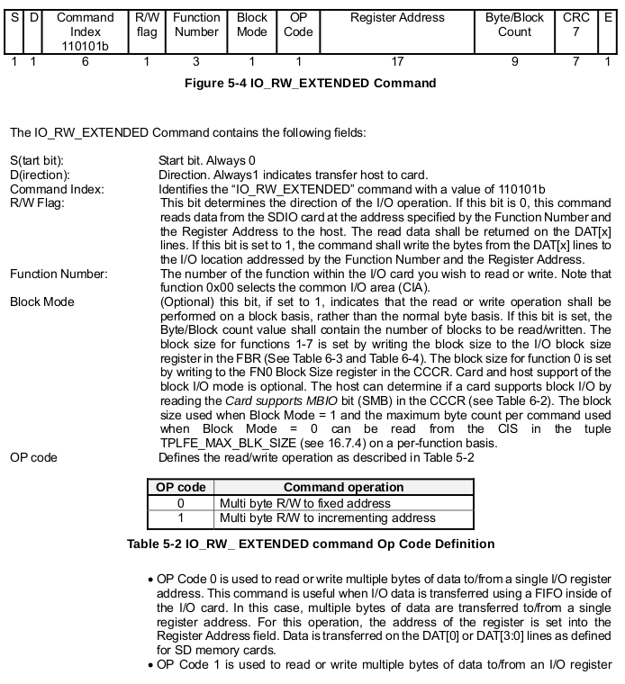
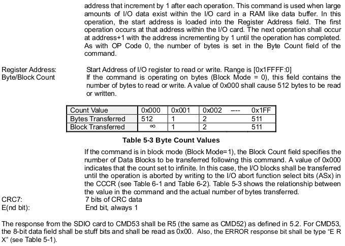
6 SDIO Card Internal Operation
6.1 Overview
Each SDIO card may have from 1 to 7 functions plus one memory function built into it.
6.2 Interrupts
All SDIO hosts should support hardware interrupts.
6.3 SDIO Fixed Internal Map
The SDIO card has a fixed internal register space and a function unique area. The fixed area contains information about the card and certain mandatory and optional registers in fixed locations. The fixed loactions allow any host to obtain information about the card and perform simple operations such as enable in a common manner. The function unique area is a per-function area, which is defined either by the Application Specifications for Standard SDIO functions or by the verdor for non-standard functions.
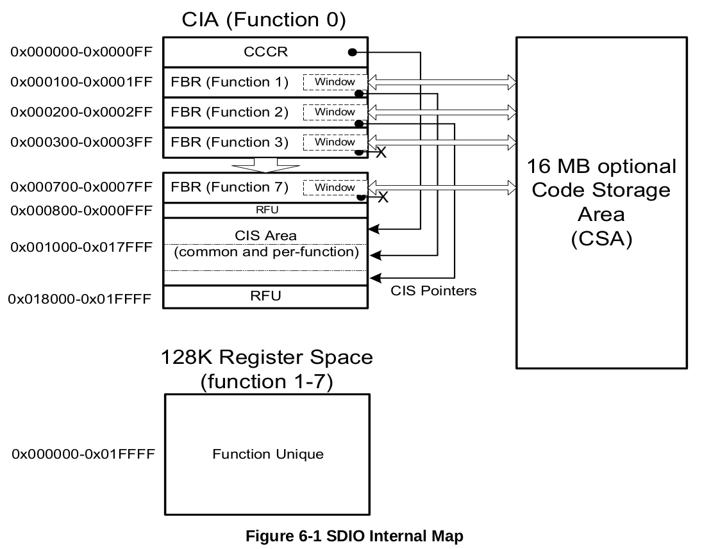
6.4 Common I/O Area (CIA)
The Common I/O Area (CIA) shall be implemented on all SDIO cards. The CIA is accessed by the host via I/O reads and writes to function 0. The registers within the CIA are provided to enable/disable the operation of the I/O function(s), control the generation of interrupts and optionally load softwre to support the I/O functions. The registers in the CIA also provide information about the function(s) ablilities and requirements. There are three distinct register structes supported within the CIA. They are:
- Card Common Control Register (CCCR)
- Function Basic Registers (FBR)
- Card Information Structure (CIS)
Footnotes:
DEFINITION NOT FOUND.